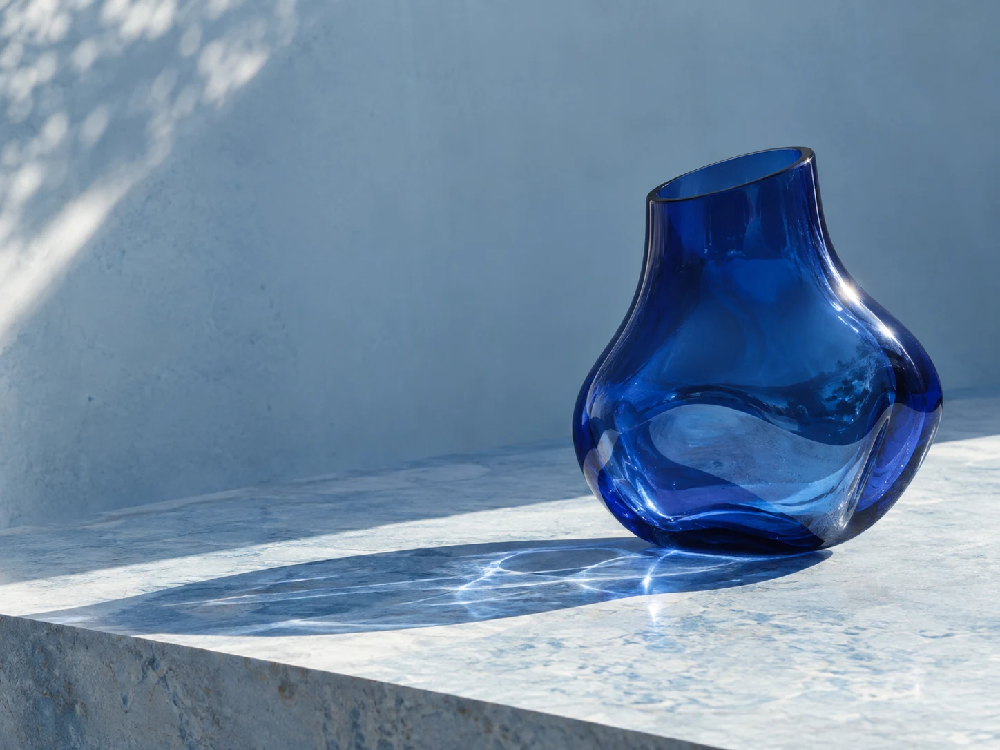
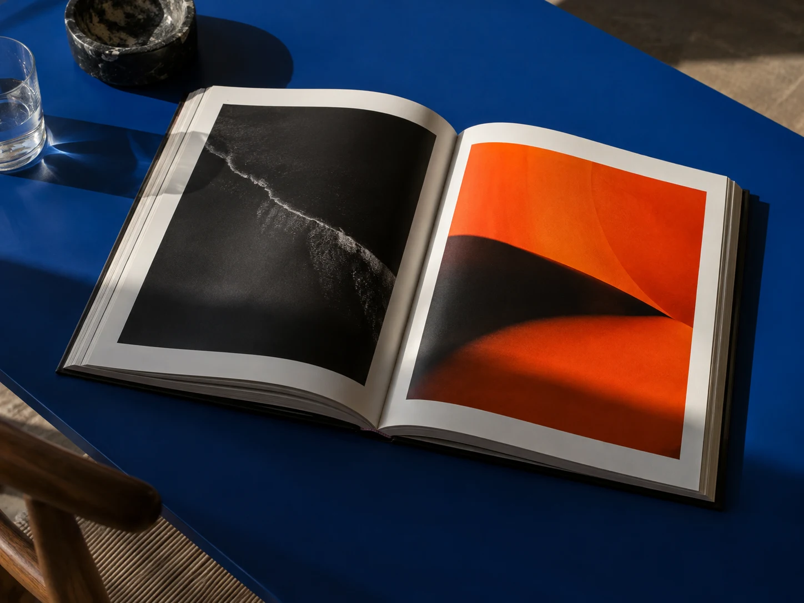

Light becomes the material.
One still-life image and a restrained digital study. The object is a generated concept, not a commercially available product.
COMPOSITION
The vessel becomes both subject and lens. Directional light moves attention between the glass, its reflections, and the stone beneath it. The surrounding space is part of the composition.
MADE FOR THIS COLLECTION
Original generated imagery. A fictional, self-initiated project with no client commission or commercial results implied.
Read image creditsNEXT STUDY / 03
Open Edition
